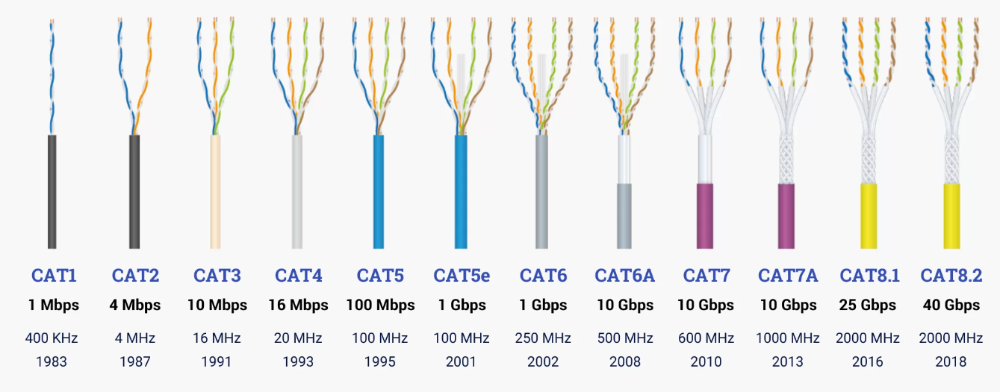
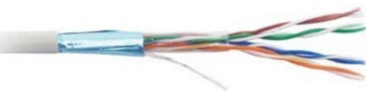
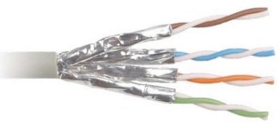
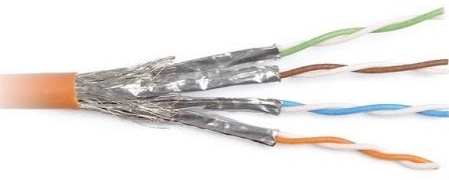
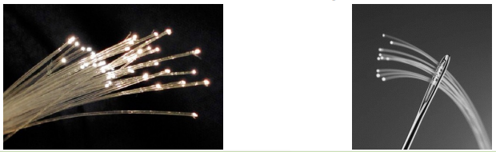
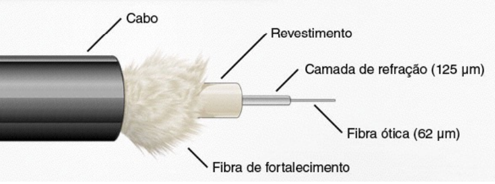
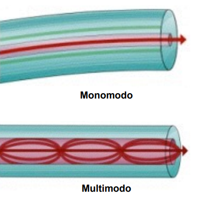
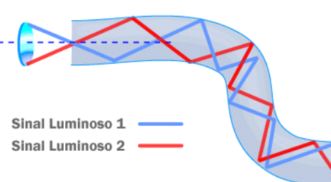

◉ Meios de transmissão
• Estudo dos meios de transmissão usados nas redes de
computadores, além de técnicas usadas para ligar as estações ao
meio.
• Qualquer meio físico capaz de transportar informações
eletromagnéticas é passível de ser usado em redes de
computadores.
➤ Tipos Mais Usados
• Meios de transmissão guiados
• Par trançado
• Cabo coaxial
• Fibra ótica
• Meios de transmissão sem fio
• Radiodifusão
• Infravermelho
• Microondas
• Ondas de luz
➤ Par Trançado
• 4 pares de fios de cobre, enrolados em espiral:
• Este sistema cria uma barreira eletromagnética que reduz o ruído
externo;
• Cada par utiliza um padrão de entrançamento diferente para evitar a
interferência entre os pares.
• Os cabos de rede precisam suportar frequências muito altas,
causando um mínimo de atenuação do sinal.
• Os cabos de par trançado são classificados em categorias, que
indicam a qualidade do cabo e a frequência máxima suportada por
ele.
• Cada categoria é composta por um conjunto de características
técnicas e de normas de fabricação.
• Em todas as categorias, a distância máxima permitida é de 100
metros (com exceção das redes 10G com cabos categoria 6, onde
a distância máxima cai para apenas 55 metros).
• Categorias 1 e 2: não são mais reconhecidas pela TIA
(Telecommunications Industry Association); Utilizadas em
instalações telefônicas e dados bastante antigas. Não existia um
padrão de entrançamento definido.
• Categoria 3: 16 MHz; Redes Ethernet de 10 Mbits. Possui pelo
menos 24 tranças por metro. Continua sendo utilizado, mas em
instalações telefônicas.
• Categoria 4: 20 MHz; Não é mais recomendado pela TIA.
• Categoria 5: 100 MHz; Requisito mínimo para redes de 100 e 1000 Mbits.
Dificilmente encontrado, pois foi substituído pela categoria 5e.
• Categoria 5e: O “e” vem de “enhanced”; Versão aperfeiçoada do padrão,
com normas mais estritas, desenvolvidas de forma a reduzir a interferência
entre os cabos e a perda de sinal, o que ajuda em cabos mais longos, perto
dos 100 metros permitidos.
• Categoria 6: 250 MHz; originalmente desenvolvida para ser usada em redes
de 1000 Mbps, mas com o desenvolvimento do padrão para cabos categoria
5e sua adoção acabou sendo retardada, já que embora os cabos categoria 6
ofereçam uma qualidade superior, o alcance continua sendo de apenas 100
metros; Podem ser usados em redes 10Gbps, mas nesse caso o alcance é de
apenas 55 metros.
• Categoria 6a: 500 MHz; o “a” vem de “augmented”; permite o uso de até 100
metros em redes 10Gbps; possui especificações técnicas melhoradas para
reduzir a perda de sinal e tornar o cabo mais resistente a interferências.
• Cabos categoria 6 e 6a possuem um separador entre os pares para
reduzir o crosstalk (interferências entre os pares de cabos). Isso
aumentou a espessura dos cabos e tornou-os um pouco menos
flexíveis.
• Categoria 7: em estágio inicial de desenvolvimento, podem ser usados no padrão
de 100 Gbps.
• Cabos de padrões superiores podem ser usados em substituição de cabos dos
padrões antigos, além de trazerem a possibilidade de serem aproveitados nos
padrões de rede seguintes.
• Entretanto, investir em cabos de um padrão superior ao que você precisa nem
sempre é uma boa ideia, já que cabos de padrões recém-introduzidos são mais
caros e difíceis de encontrar.
• Além disso, não existe garantia de que os cabos usados serão mesmo suportados
dentro do próximo padrão de redes até que ele esteja efetivamente concluído.

➤ Par Trançado - Blindagem
• Os cabos blindados podem prestar bons serviços em ambientes com forte
interferência eletromagnética, como, por exemplo, grandes motores
elétricos ou grandes antenas de transmissão muito próximas;
• A questão da blindagem não tem relação direta com a categoria do cabo;
• Os cabos sem blindagem são mais baratos, mais flexíveis e mais fáceis de
crimpar e por isso são de longe os mais populares.
• Os cabos sem blindagem são chamados de UTP (Unshielded Twisted Pair);
• Os cabos blindados, por sua vez, se dividem em três categorias:
• FTP (Foiled Twisted Pair);
• STP (Shilded Twisted Pair);
• SSTP (Screened Shielded Twisted Pair) ou SFTP (Screened Foiled Twisted Pair).
➤ FTP (Foiled Twisted Pair)
• Utilizam a blindagem mais simples;
• Neles, uma fina folha de aço ou de liga de alumínio envolve todos
os pares do cabo, protegendo-os contra interferências externas,
mas sem fazer nada com relação ao crosstalk, ou seja, a
interferência entre os pares de cabos.

➤ STP (Shielded Twisted Pair)
• Usa uma blindagem individual para cada par de cabos. Isso reduz o
crosstalk e melhora a tolerância do cabo com relação à distância, o
que pode ser usado em situações onde for necessário crimpar
cabos fora do padrão, com mais de 100 metros.

➤ SSTP (Screened Shielded Twisted Pair)
• Também chamado de SFTP (Screened Foiled Twisted Pair);
• Combinam a blindagem individual para cada par de cabos com uma
segunda blindagem externa, envolvendo todos os pares, o que torna os
cabos especialmente resistentes a interferências externas;
• Eles são mais adequados a ambientes com fortes fontes de interferências.

➤ Par Trançado - Conectores
• RJ (Registered Jack) é um padrão de interface de rede física. Os
projetos padrão para esses conectores e sua fiação são nomeados
RJ11, RJ14, RJ21, RJ45, RJ48, etc.
• O conector RJ45 é utilizado para fazer a interconexão com cabos do tipo
par-trançado, uma vez que o mesmo possui 8 condutores, um para cada
fio de cobre do cabo.
➤ Fibra Óptica
• As linhas de fibra óptica são fios de vidro opticamente puro, tão finos
quanto um fio de cabelo, que transmitem informação digital ao longo de
grandes distâncias, também usadas na geração de imagens médicas e em
inspeções de engenharia mecânica.
• A fibra ótica não envia dados da mesma maneira que os cabos
convencionais. Para garantir mais velocidade, todo o sinal é transformado
em luz, com o auxílio de conversores integrados aos transmissores.

• Como os fios de fibra são muito finos, é possível incluir um grande volume deles
em um cabo de tamanho modesto, o que é uma grande vantagem sobre os fios
de cobre.
• Como a capacidade de transmissão de cada fio de fibra é bem maior que a de
cada fio de cobre e eles precisam de um volume muito menor de circuitos de
apoio, como repetidores, usar fibra em links de longa distância acaba saindo
mais barato.
• Outra vantagem é que os cabos de fibra são imunes a interferência
eletromagnética, já que transmitem luz e não sinais elétricos, o que permite que
sejam usados mesmo em ambientes onde o uso de fios de cobre é
problemático.
• Como criar links de longa distância cavando valas ou usando cabos
submarinos é muito caro, é normal que seja usado um volume de cabos
muito maior que o necessário.
• Os cabos adicionais são chamados de fibra escura (dark fiber), não por
causa da cor, mas pelo fato de não serem usados. Eles ficam
disponíveis para expansões futuras e para substituição de cabos
rompidos ou danificados.
• Há várias camadas que fazem parte da estrutura essencial de um
cabo de fibra óptica:
- Proteção plástica
- Fibra de fortalecimento
- Revestimento interno
- Camada de refração
- Núcleo

• Em um cabo de fibra óptica, a luz viaja através do núcleo (o corredor)
refletindo constantemente na camada de refração (as paredes revestidas
de espelhos), o que representa um princípio chamado de reflexão interna
total.
• Como a camada de refração não absorve nenhuma luz do núcleo, a onda
de luz pode viajar grandes distâncias.
• Entretanto, uma parte do sinal luminoso se degrada dentro da fibra,
principalmente em razão de impurezas contidas no vidro.

• Tipos de Fibra
• Monomodo
• Multimodo
• Possui um núcleo de 8 a 10 mícrons (milésimos de milímetro) de diâmetro;
• Atendem um sinal por vez;
• Ou seja, uma única fonte de luz (na maior parte das vezes, laser) envia
informações por enormes distâncias;
• Por apresentar menos dispersão, pode haver distâncias muito grandes entre
retransmissores;
• Teoricamente, até 80 quilômetros podem separar dois transmissores, mas na
prática eles são um pouco mais próximos;
• Outra vantagem das fibras desse tipo é a largura da banda oferecida, que garante
velocidades maiores na troca de informações.
• Possui um núcleo de 62,5 mícrons (milésimos de milímetro) de
diâmetro;
• Garantem a emissão de vários sinais ao mesmo tempo (geralmente
utilizam LEDs para a emissão);
• Esse tipo de fibra é mais recomendado para transmissões de curtas
distâncias, pois garante apenas 300 metros de transmissões sem
perdas.
• Elas são mais recomendadas para redes domésticas porque são
muito mais baratas.
